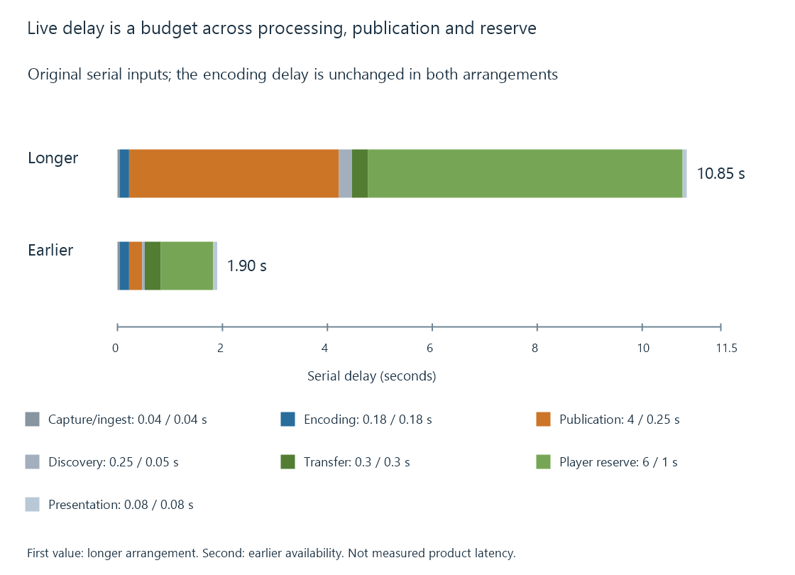

Low-latency streaming and the live presentation delay
Low-latency streaming reduces the delay between an event and its presentation by coordinating encoding, early media availability, delivery and player buffering.
Live latency is the delay between a programme event and the viewer seeing or hearing it. Low-latency streaming reduces that delay across the whole path, including when media becomes available and how far behind it the player chooses to stay.
A converter running faster than real time can help keep up with the programme. Its processing speed does not measure how old the displayed picture is.
Choose the two endpoints
An event can be timed at camera capture, encoder input or publication. At the receiving end, a measurement can stop at byte arrival, decoder output or actual presentation. These produce different latency numbers.
For viewers, capture-to-presentation is usually the meaningful experience. A server's “output is ready” timestamp accounts for only part of that path.
The startup delay is another quantity: the wait after a playback request until useful presentation begins. A live player can start in one second while presenting a programme picture ten seconds old.
Several delays add to the picture's age
Consider two original, deliberately simplified serial budgets:
| Component | Longer-delay arrangement | Earlier-availability arrangement |
|---|---|---|
| Capture/ingest | 0.04 s | 0.04 s |
| Encoding | 0.18 s | 0.18 s |
| Publication wait | 4.00 s | 0.25 s |
| Discovering newly available media | 0.25 s | 0.05 s |
| Transfer | 0.30 s | 0.30 s |
| Chosen player reserve | 6.00 s | 1.00 s |
| Final preparation/presentation | 0.08 s | 0.08 s |
| Total | 10.85 s | 1.90 s |
These inputs are explanatory delays for one model, not typical HLS or Emby values. Real stages can overlap, and delay varies with where an event falls within an interval.
The model keeps encoding unchanged. Most of the improvement comes from publishing usable media earlier and retaining less intentional delay at the player. Making the encoder twice as fast would affect only its 0.18-second contribution here.

Earlier media requires an earlier delivery path
If the publisher waits until a complete six-second interval exists, no receiver can obtain its first usable part four seconds before that publication. Producing shorter intervals or exposing partial media removes part of that wait.
Low-Latency HLS adds several coordinated mechanisms:
| Mechanism | Contribution |
|---|---|
| Partial segments | Describe smaller media units before their parent segment is complete |
| Blocking playlist reload | Let a playlist response wait for the requested new availability rather than force repeated empty polling |
| Preload hints | Identify a resource expected to become available next |
| Delta updates | Reduce repeated playlist information |
| Rendition reports | Help relate availability across alternatives |
These features work together with the publisher, origin, intermediaries and player. A cache that waits for the whole object before forwarding it can restore a delay that the packager intended to remove.
CMAF is useful for organizing incrementally available media. It does not supply the discovery or request policy by itself, and a delivery system must coordinate media timing and availability with its description.
A smaller reserve buys less time through an interruption
For a simple player with one second of usable reserve, a 1.4-second period with no useful arrivals can exhaust that reserve after one second. With six seconds initially available, the same interruption leaves 4.6 seconds.
The longer reserve improves tolerance while increasing how far behind the newest usable media the presentation remains. Low-latency policies manage that tradeoff rather than abolish it.
A player can recover by pausing to rebuild reserve, moving closer to the new live position, or changing its playback rate within its supported policy. Those choices affect continuity, omitted programme time and live delay differently.
Measure the part that changed
When assessing an Emby live session, identify the capture or programme-time reference, the currently presented moment, the server's ready-output position and the receiver's buffered position.
That separates a producer struggling to keep up from a player deliberately maintaining a reserve. A lower transfer time with unchanged publication and reserve can improve one component while leaving most of the picture's age intact. The delay budget shows where an observed improvement can enter the result.
See Also
- Live streams and on-demand streams
- HTTP Live Streaming (HLS)
- Common Media Application Format (CMAF)
- Buffering, ready media and playback reserve
- Playback startup delay
- Real-time transcoding and playback deadlines